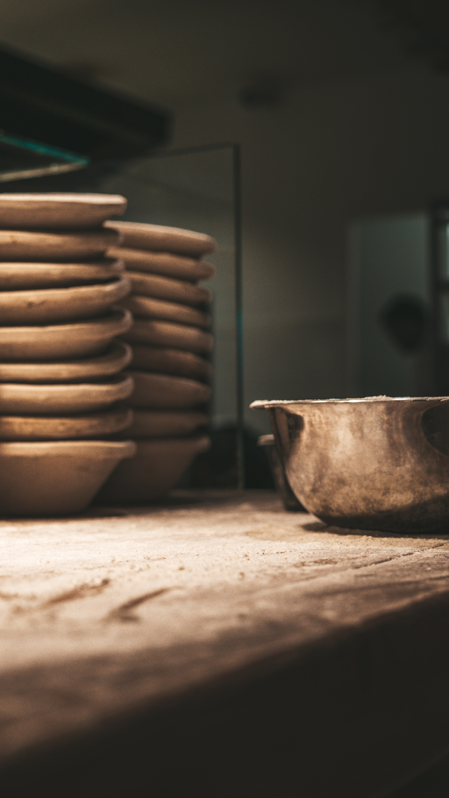

bakkerij
Mijn vorige studie was bakkerij en dit heb ik gestudeert voor 3 jaar plus 1 specialisatie jaar hiervoor moest ik natuurlijk stage voor doen wij hadden elke vrijdag stage en dan voor de vacanties 1 week stage hierin moest ik brood en patisserie voor hun bakken in mijn laaste jaar was het meer patisserie. Maar op het einde vond ik dit niet echt mijn ding ookal heb ik er veel van geleert. vooral de nacht uren en de slecht invloed op mijn lichaam zoals last van rug pijn.